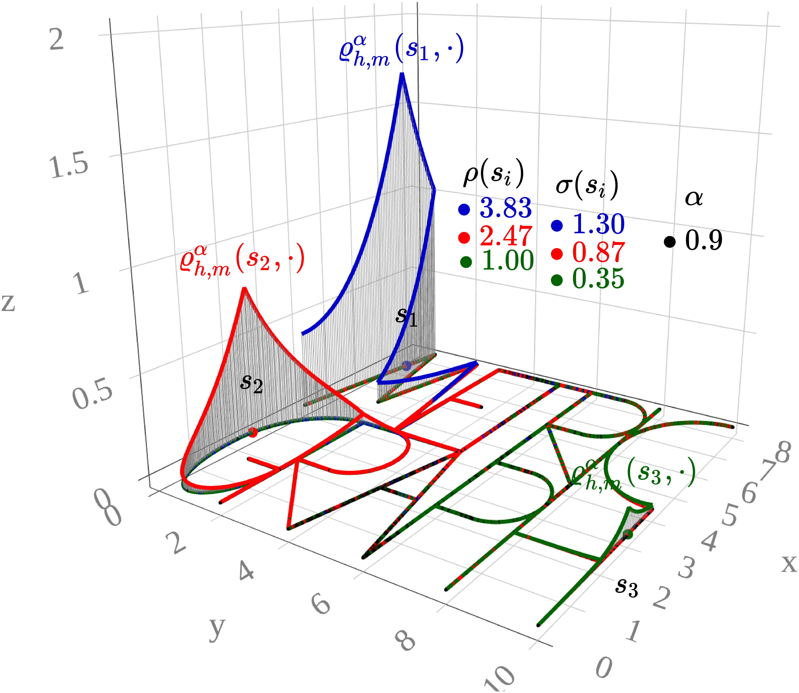

Go back to the Contents page.
Press Show to reveal the code chunks.
Go back to the About page. To see how the covariance function changes when the location changes, go to model_prop1.html.
This vignette illustrates how our proposed approach allows for Gaussian processes with general smoothness and non-stationary covariance on any compact metric graph. Recall that these processes are defined as solutions to \[\begin{equation}\label{SPDE}\tag{SPDE} (\kappa^2 - \Delta_{\Gamma})^{\alpha/2}(\tau u) = \mathcal{W}, \quad \text{on $\Gamma$}, \end{equation}\] where \(\Delta_{\Gamma}\) is the so-called Kirchhoff–Laplacian, \(\tau(\cdot)\) and \(\kappa(\cdot)\) are spatially varying functions that control the marginal variance and practical correlation range, respectively, \(\alpha>1/2\) controls the smoothness, and \(\mathcal{W}\) is Gaussian white noise defined on a probability space \(\left(\Omega,\mathcal{F},\mathbb{P}\right)\).
Below we set some global options for all code chunks in this document.
# Set seed for reproducibility
set.seed(1982)
# Set global options for all code chunks
knitr::opts_chunk$set(
# Disable messages printed by R code chunks
message = FALSE,
# Disable warnings printed by R code chunks
warning = FALSE,
# Show R code within code chunks in output
echo = TRUE,
# Include both R code and its results in output
include = TRUE,
# Evaluate R code chunks
eval = FALSE,
# Enable caching of R code chunks for faster rendering
cache = FALSE,
# Align figures in the center of the output
fig.align = "center",
# Enable retina display for high-resolution figures
retina = 2,
# Show errors in the output instead of stopping rendering
error = TRUE,
# Do not collapse code and output into a single block
collapse = FALSE
)
# Start the figure counter
fig_count <- 0
# Define the captioner function
captioner <- function(caption) {
fig_count <<- fig_count + 1
paste0("Figure ", fig_count, ": ", caption)
}
# Define the function to truncate a number to two decimal places
truncate_to_two <- function(x) {
truncated <- floor(x * 100) / 100
sprintf("%.2f", truncated)
}Below we load the necessary libraries and define the auxiliary functions.
library(rSPDE)
library(MetricGraph)
library(dplyr)
library(plotly)
library(scales)
library(patchwork)
library(tidyr)
library(here)
library(rmarkdown)
# Cite all loaded packages
library(grateful)
library(slackr)
source("keys.R")
slackr_setup(token = token) # token comes from keys.R## [1] "Successfully connected to Slack"capture.output(
knitr::purl(here::here("functionality1.Rmd"), output = here::here("functionality1.R")),
file = here::here("old/purl_log.txt")
)
source(here::here("functionality1.R"))Below we define function compute_pcr(), which computes
the practical correlation. It receives the output of the rSPDE::spde.matern.operators()
function (when evaluated on compatible parameters) and a threshold
cor_threshold. Using the correlation matrix and the
geodesic distance matrix, for each point in the mesh, it computes the
practical correlation range as the minimum geodesic distance such that
the correlation is below a given threshold cor_threshold
(usually defined as 0.1). The function returns a vector with the
practical correlation range for each point in the mesh.
Press Show to reveal the code chunks.
compute_pcr <- function(op, cor_threshold) {
# Compute the covariance matrix
cov_matrix <- covariance_mesh(op)
# Compute the correlation matrix
cor_matrix <-cov2cor(cov_matrix)
# Compute the geodesic distance matrix
op$graph$compute_geodist_mesh()
# Extract the geodesic distance matrix
dist_matrix <- op$graph$mesh$geo_dist
# Initialize the vector to store the practical correlation range
pcr <- numeric(dim(cor_matrix)[1])
process_row <- function(row_index) {
# For each row_index, create an auxiliary matrix aux_mat with the correlation and geodesic distance
aux_mat <- cbind(cor_matrix[row_index, ], dist_matrix[row_index, ])
# Order the auxiliary matrix by the geodesic distance
ordered_aux_mat <- aux_mat[order(aux_mat[, 2]), ]
# Filter the auxiliary ordered matrix by the correlation threshold
filtered_aux_mat <- ordered_aux_mat[ordered_aux_mat[,1] < cor_threshold, ]
if (nrow(filtered_aux_mat) > 0) {
# Return the minimum geodesic distance such that the correlation is below the threshold
return(filtered_aux_mat[1, 2])
} else {
# If the condition is not satisfied, record the minimum correlation value and return an error message
min <- min(aux_mat[, 1])
stop(paste0("The condition cor_matrix[row_index, ] < cor_threshold is not satisfied for row_index = ",
row_index, ". Increase cor_threshold. The minimum value of cor_matrix[row_index, ] is ",
min))
}
}
pcr <- sapply(1:dim(cor_matrix)[1], process_row)
return(pcr)
}Below we build the MetricGraph package’s logo graph.
# This is a function from MetricGraph package that returns a list of edges
edges <- logo_lines()
# Create a new graph object
logo_graph <- metric_graph$new(edges = edges, perform_merges = TRUE)
# Prune the vertices
#logo_graph$prune_vertices()
# Build the mesh
h <- 0.05
logo_graph$build_mesh(h = h)
# Extract the mesh locations in Euclidean coordinates
xypoints <- logo_graph$mesh$VBelow we define \(\tau(\cdot)\)
(model_for_tau) and \(\kappa(\cdot)\)
(model_for_kappa) in \(\eqref{SPDE}\) as \(\tau(s) = \exp(0.05\cdot(x(s)-y(s)))\) and
\(\kappa(s) =
\exp(0.1\cdot(x(s)-y(s)))\), where \((x(s),y(s))\) are Euclidean coordinates on
the plane. These choices make \(\tau(\cdot)\) and \(\kappa(\cdot)\) large in the bottom-right
region of the MetricGraph package’s logo, as shown in
Figure 2.
# Define an auxiliary variable
aux <- 0.1*(xypoints[,1] - xypoints[,2])
# Define the matrices B.tau and B.kappa
B.tau <- cbind(0, 1, 0, 0.5*aux, 0)
B.kappa <- cbind(0, 0, 1, 0, aux)
# Log-regression coefficients
theta <- c(0, 0, 1, 1)
# Define the models for tau and kappa
model_for_tau <- exp(B.tau[,-1]%*%theta)
model_for_kappa <- exp(B.kappa[,-1]%*%theta)Below we consider \(\alpha = 0.9, 1.3, 2.1\) and compute the covariance between \(s_0\) and all other points on the mesh.
# Choose a row number, any between 1 and dim(est_cov_matrix1)[1]
#point2 <- c(0.03971546, 2.39628)
point2 <- c(5,4)
rownumber <- which.min((xypoints[,1]-point2[1])^2 + (xypoints[,2]-point2[2])^2)
# Choose alpha
nu1 <- 0.4
alpha1 <- nu1 + 1/2
# Compute the operator
op1 <- rSPDE::spde.matern.operators(graph = logo_graph,
B.tau = B.tau,
B.kappa = B.kappa,
parameterization = "spde",
theta = theta,
alpha = alpha1)
# Compute the covariance between the rownumber-th point and all other points
est_cov_matrix1 <- covariance_mesh(op1)
rowfromcov1 <- est_cov_matrix1[rownumber, ]
# Choose alpha
nu2 <- 0.8
alpha2 <- nu2 + 1/2
# Compute the operator
op2 <- rSPDE::spde.matern.operators(graph = logo_graph,
B.tau = B.tau,
B.kappa = B.kappa,
parameterization = "spde",
theta = theta,
alpha = alpha2)
# Compute the covariance between the rownumber-th point and all other points
est_cov_matrix2 <- covariance_mesh(op2)
rowfromcov2 <- est_cov_matrix2[rownumber, ]
# Choose alpha
nu3 <- 1.6
alpha3 <- nu3 + 1/2
# Compute the operator
op3 <- rSPDE::spde.matern.operators(graph = logo_graph,
B.tau = B.tau,
B.kappa = B.kappa,
parameterization = "spde",
theta = theta,
alpha = alpha3)
# Compute the covariance between the rownumber-th point and all other points
est_cov_matrix3 <- covariance_mesh(op3)
rowfromcov3 <- est_cov_matrix3[rownumber, ]Below we plot the covariance functions \(\varrho^{\alpha}(s_0,\cdot)=\text{Cov}(u(s_0),u(\cdot))\)
for different smoothness parameter \(\nu\) on the MetricGraph
package’s logo.
Press Show to reveal the code chunks.
# Create a plot for the covariance between point1 and all other points
c1 <- logo_graph$plot_function(data = rowfromcov1, vertex_size = 0) +
ggtitle("$\\varrho^{0.9}_{h,m}(s_0,\\cdot)$") +
theme_minimal() +
theme(text = element_text(family = "Palatino"),
plot.title = element_text(hjust = 0.5, size = 12),
legend.key.width = unit(0.2, "cm"),
legend.key.height = unit(1, "cm")) +
annotate("point", x = xypoints[rownumber,1], y = xypoints[rownumber,2], size = 1, color = "black") +
annotate("text", x = xypoints[rownumber,1] - 0.8, y = xypoints[rownumber,2], label = "$s_0$", size = 3, hjust = 0, color = "black")
# Create a plot for the covariance between point2 and all other points
c2 <- logo_graph$plot_function(data = rowfromcov2, vertex_size = 0) +
ggtitle("$\\varrho^{1.3}_{h,m}(s_0,\\cdot)$") +
theme_minimal() +
theme(text = element_text(family = "Palatino"),
plot.title = element_text(hjust = 0.5, size = 12),
legend.key.width = unit(0.2, "cm"),
legend.key.height = unit(1, "cm")) +
annotate("point", x = xypoints[rownumber,1], y = xypoints[rownumber,2], size = 1, color = "black") +
annotate("text", x = xypoints[rownumber,1] - 0.8, y = xypoints[rownumber,2], label = "$s_0$", size = 3, hjust = 0, color = "black")
# Create a plot for the covariance between point3 and all other points
c3 <- logo_graph$plot_function(data = rowfromcov3, vertex_size = 0) +
ggtitle("$\\varrho^{2.1}_{h,m}(s_0,\\cdot)$") +
theme_minimal() +
theme(text = element_text(family = "Palatino"),
plot.title = element_text(hjust = 0.5, size = 12),
legend.key.width = unit(0.2, "cm"),
legend.key.height = unit(1, "cm")) +
annotate("point", x = xypoints[rownumber,1], y = xypoints[rownumber,2], size = 1, color = "black") +
annotate("text", x = xypoints[rownumber,1] - 0.8, y = xypoints[rownumber,2], label = "$s_0$", size = 3, hjust = 0, color = "black")
# Combine the three plots
csmp2 <- c1 + c2 + c3
# Save the combined plot
#ggsave(here("data_files/cov_plots_diff_nu.png"), plot = csmp2, width = 13.83, height = 4.5, dpi = 300)
myggsave(csmp2, width = 13.83, height = 4.5)
save(csmp2, file = here::here("data_files/csmp2.Rdata"))
Figure 1: Example of covariance functions \(\varrho^{\alpha}(s_0,\cdot)\) for different
smoothness parameter \(\alpha\) on the
MetricGraph package’s logo.
Below we show 3D plots of the covariance functions \(\varrho^{\alpha}(s_0,\cdot)=\text{Cov}(u(s_0),u(\cdot))\)
for different smoothness parameter \(\nu\) on the MetricGraph
package’s logo.
Press Show to reveal the code chunks.
p1 <- logo_graph$plot_function(X = rowfromcov1, vertex_size = 1, type = "plotly", edge_color = "black", edge_width = 4, line_color = "#0000C8", line_width = 4)
p2 <- logo_graph$plot_function(X = rowfromcov2, vertex_size = 1, type = "plotly", edge_color = "black", edge_width = 4, line_color = "red", line_width = 4, p = p1)
p3 <- logo_graph$plot_function(X = rowfromcov3, vertex_size = 1, type = "plotly", edge_color = "black", edge_width = 4, line_color = "darkgreen", line_width = 4, p = p2)
eyer <- 1.1
p_B <- p3 %>%
add_trace(x = xypoints[rownumber, 2], y = xypoints[rownumber, 1], z = 0, mode = "markers", type = "scatter3d",
marker = list(size = 4, color = "black", symbol = 104)) %>%
config(mathjax = 'cdn') %>%
layout(font = list(family = "Palatino"),
showlegend = FALSE,
scene = list(xaxis = list(title = list(text = "x", font = list(color = "gray", size = 17)), tickfont = list(color = "gray", size = 14)),
yaxis = list(title = list(text = "y", font = list(color = "gray", size = 17)), tickfont = list(color = "gray", size = 14)),
zaxis = list(title = list(text = "z", font = list(color = "gray", size = 17)), tickfont = list(color = "gray", size = 14)),
aspectratio = list(x = 1.8, y = 1.8, z = 1.8),
camera = list(
eye = list(x = 3*eyer, y = 2*eyer, z = 1*eyer), # Adjust the viewpoint
center = list(x = 0, y = 0, z = 0)), # Focus point
annotations = list(
list(
x = 1, y = 1, z = 0.21,
text = TeX("\\varrho^{0.9}_{h,m}(s_0,\\cdot)"),
textangle = 0, ax = 60, ay = 0,
font = list(color = "#0000C8", size = 14),
arrowcolor = "rgba(0,0,0,0)"),
list(
x = 1, y = 1, z = 0.14,
text = TeX("\\varrho^{1.3}_{h,m}(s_0,\\cdot)"),
textangle = 0, ax = 60, ay = 0,
font = list(color = "red", size = 14),
arrowcolor = "rgba(0,0,0,0)"),
list(
x = 1, y = 1, z = 0.08,
text = TeX("\\varrho^{2.1}_{h,m}(s_0,\\cdot)"),
textangle = 0, ax = 60, ay = 0,
font = list(color = "darkgreen", size = 14),
arrowcolor = "rgba(0,0,0,0)"),
list(
x = xypoints[rownumber,2], y = xypoints[rownumber,1], z = 0,
text = TeX("s_0"),
textangle = 0, ax = 0, ay = -15,
font = list(color = "black", size = 14),
arrowcolor = "rgba(0,0,0,0)"))))
# Save the 3D plot
save(p_B, file = here("data_files/3d_cov_plots_diff_nu.RData"))
save_plotly_figure_fixed(p_B, dpi = 600, scale = 2, viewer_change = 1)png_files <- c("/home/rierasl/Desktop/PhD_thesis/data_files/plotlypdf/p_A.png",
"/home/rierasl/Desktop/PhD_thesis/data_files/plotlypdf/p_B.png")
output_file <- "/home/rierasl/Desktop/PhD_thesis/data_files/plotlypdf/p_A_p_B.png"
combine_pngs_with_gap(png_files, output_file, gap = 200)#load(here::here("data_files/3d_cov_plots_diff_nu.RData"))
knitr::include_graphics(here::here("data_files/plotlypdf/p_A.png"))
Figure 2: Example of covariance functions \(\varrho^\alpha(s_i,\cdot)\), \(i=1,2,3\) for three locations with
different standard deviations and practical correlation ranges on the
MetricGraph package’s logo.
We used R version 4.5.2 (R Core Team 2025a) and the following R packages: cowplot v. 1.2.0 (Wilke 2025), ggmap v. 4.0.2 (Kahle and Wickham 2013), ggpubr v. 0.6.3 (Kassambara 2026), ggtext v. 0.1.2 (Wilke and Wiernik 2022), grid v. 4.5.2 (R Core Team 2025b), gsignal v. 0.3.7 (Van Boxtel, G.J.M., et al. 2021), here v. 1.0.1 (Müller 2020), htmltools v. 0.5.8.1 (Cheng et al. 2024), INLA v. 25.11.22 (Rue, Martino, and Chopin 2009; Lindgren, Rue, and Lindström 2011; Martins et al. 2013; Lindgren and Rue 2015; De Coninck et al. 2016; Rue et al. 2017; Verbosio et al. 2017; Bakka et al. 2018; Kourounis, Fuchs, and Schenk 2018), inlabru v. 2.13.0 (Yuan et al. 2017; Bachl et al. 2019), knitr v. 1.50 (Xie 2014, 2015, 2025), latex2exp v. 0.9.8 (Meschiari 2026), lwgeom v. 0.2.15 (E. Pebesma 2026), Matrix v. 1.7.3 (Bates, Maechler, and Jagan 2025), MetricGraph v. 1.5.0.9000 (Bolin, Simas, and Wallin 2023a, 2023b, 2024, 2025; Bolin et al. 2024), OpenStreetMap v. 0.4.1 (Fellows and Stotz 2025), patchwork v. 1.3.1 (Pedersen 2025), plotly v. 4.11.0 (Sievert 2020), plotrix v. 3.8.14 (J 2006), pracma v. 2.4.4 (Borchers 2023), renv v. 1.1.7 (Ushey and Wickham 2026), reshape2 v. 1.4.4 (Wickham 2007), reticulate v. 1.44.1 (Ushey, Allaire, and Tang 2025), rmarkdown v. 2.30 (Xie, Allaire, and Grolemund 2018; Xie, Dervieux, and Riederer 2020; Allaire et al. 2025), rSPDE v. 2.5.2.9000 (Bolin and Kirchner 2020; Bolin and Simas 2023; Bolin, Simas, and Xiong 2024), scales v. 1.4.0 (Wickham, Pedersen, and Seidel 2025), sf v. 1.1.0 (E. Pebesma 2018; E. Pebesma and Bivand 2023), slackr v. 3.4.0 (Kaye et al. 2025), sp v. 2.2.1 (E. J. Pebesma and Bivand 2005; Bivand, Pebesma, and Gomez-Rubio 2013), tidyverse v. 2.0.0 (Wickham et al. 2019), tikzDevice v. 0.12.6 (Sharpsteen and Bracken 2023), viridis v. 0.6.5 (Garnier et al. 2024), xaringanExtra v. 0.8.0 (Aden-Buie and Warkentin 2024).